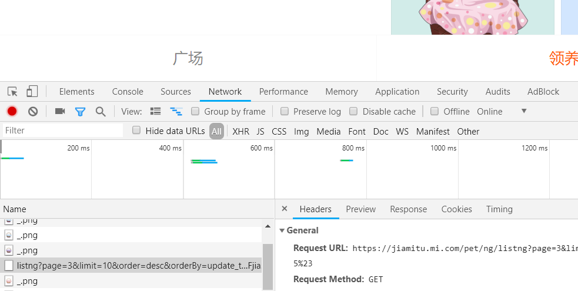
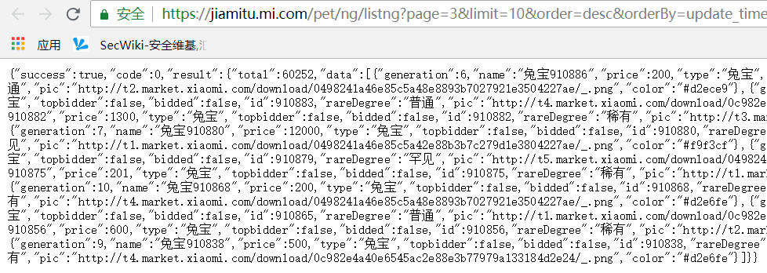
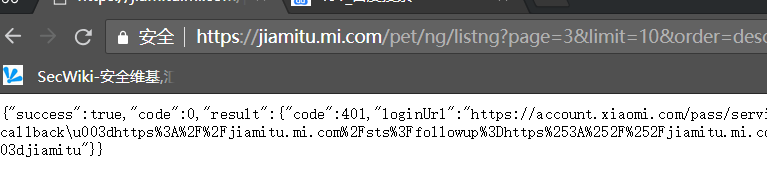
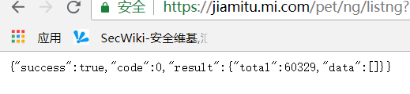
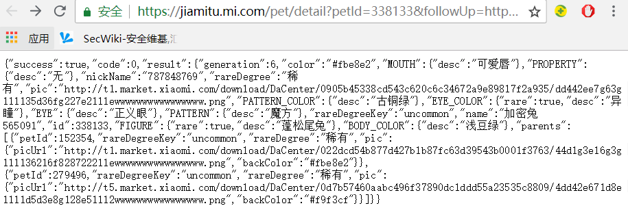
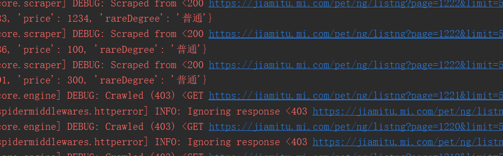
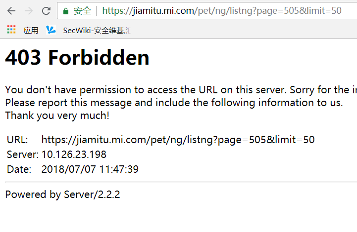
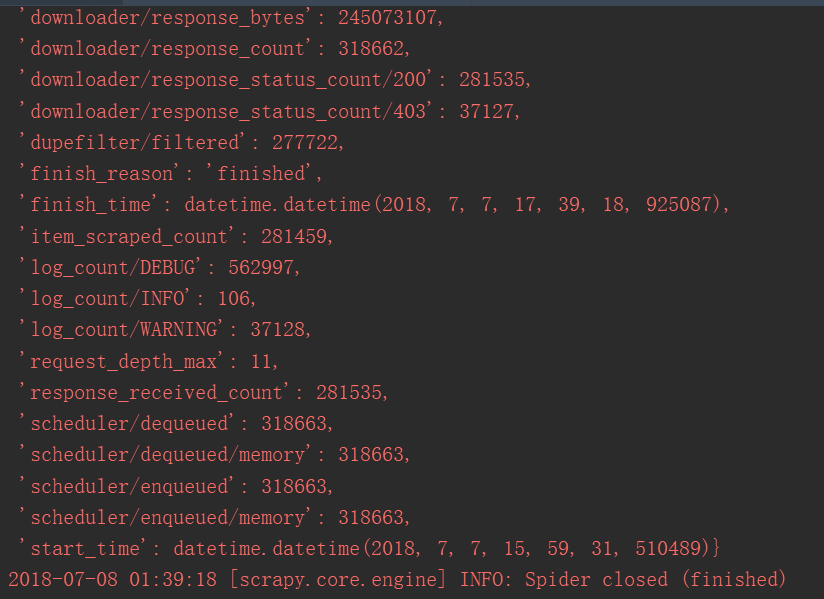

之前面试要求写点小程序，记录下过程。
一.需求
编写一个加密兔 兔宝爬虫
点击链接 http://t.cn/RdGOckh ，登录后点击“领养”，抓取其中的兔宝数据。
要求：
可以指定抓取的数量（精确到十位数即可）。
获取兔宝及父母信息。兔宝信息包括编号，代数，稀有度，当前价格。父母信息包括编号、代数、稀有度、属性（包含稀有程度）。
将兔宝与父母信息输出到文件中。
编程语言不限，使用技术不限。
抓取速度越快越好。
二.分析
基本需求使用Scrapy框架可快速实现。
三.环境
1.Anaconda3 python3.6版本。
2.Pycharm。
四.操作
1.确定兔宝列表信息请求与相应

登陆后打开网络选项卡，滚动页面查看网络请求，发现页面通过Ajax异步请求Json格式的数据，查看请求体与返回体。原始请求url如下：
1 | https://jiamitu.mi.com/pet/ng/listng?page=3&limit=10&order=desc&orderBy=update_time&rare=&followUp=https:%2F%2Fjiamitu.mi.com%2Fauction%3FuserId%3D19619417 |
返回内容为json格式的数据：

使用匿名窗口打开上述url，确定该接口需要登陆才能请求，未登录时返回结果如下，提示未授权：
删除参数进行测试，最后发现其它参数都可删除掉，只需要page及limit控制请求的数据范围即可，经测试发现limit最大可取50，如返回的Json数据所示，total值为60252，所以构造超过此值的page及limit获取当范围超出后的返回值为：

分析正常的返回值结果,单条数据json如下所示：
1 | {"generation":10,"name":"兔宝857243","price":100,"type":"兔宝","topbidder":false,"bidded":false,"id":857243,"rareDegree":"普通","pic":"http://t4.market.xiaomi.com/download/0c982e4a40e6545ac2e88e3b77979a133184d2e24/_.png","color":"#d2e6fe"} |
此处可以获取需求中的兔宝编号、代数、稀有度、当前价格信息。
2.确定兔宝详细信息请求与响应
类似确定兔宝信息的方式，获取兔宝详细信息的Ajax请求url为 :
1 | https://jiamitu.mi.com/pet/ng/getng?gid=911093&followUp=https:%2F%2Fjiamitu.mi.com%2Fbabydetail%3FpetId%3D911093 |
返回体内容包括了兔宝父母的json结构：
1 | {"petId":338133,"rareDegreeKey":"uncommon","rareDegree":"稀有","pic":{"backColor":"#fbe8e2","gene":"","picUrl":"http://t1.market.xiaomi.com/download/DaCenter/0905b45338cd543c620c6c34672a9e89817f2a935/dd442ee7g63g111135d36fg227e2111ewwwwwwwwwwwwwwww.png"} |
3.确定父母详细信息请求与响应
分析网络请求，获取父母详细信息的Ajax请求url为：
1 | https://jiamitu.mi.com/pet/detail?petId=338133&followUp=https:%2F%2Fjiamitu.mi.com%2Fmitudetail%3FpetId%3D338133 |
返回体内容包括了父母的详细信息及其父母，如下所示：
此处可根据需求决定是否递归获取其父母详细信息。
4.确定登陆请求
爬取操作需要登陆后才能进行，所以首先需要进行用户登陆操作，此处登陆页面使用Js动态创建，无法单纯使用scrapy模拟登陆，后续考虑结合使用无界面浏览器实现账户登陆操作。此处暂时先使用cookie设置登陆状态 。
五.问题
1.响应为403
开始爬取后，部分页面返回结果正常，部分为403页面：

经手动测试发现当快速进行页面刷新操作时，将返回403响应如下：
但当page值较小时基本不出现该问题，当page值较大时很容易出现该问题，因该问题间歇性出现，所以采用规避方式，对返回值为403的url均重新进行请求，直至返回正确结果 。
2.爬取效果

使用scrapy默认配置，并发请求最大为16，爬取兔宝信息，并递归爬取其父母信息，爬取结束共花费100分钟左右，其中因为某些页面存在403错误，所以重复请求277722次，最终获取兔宝信息6w+,父母信息22w+
3.后续优化
- 可以使用无界面浏览器获取登陆表单，实现账号密码登陆
- 可以结合Web框架实现可视化操作与结果展示
- 可以使用Redis管理任务队列，结合多进程、或Docker加分布式来实现更快速度的爬取
- 目前没有观察到反爬措施，如果后续发生，可结合使用代理池与Cookie池
4.代码运行
安装Anaconda3后，使用conda install scrapy安装运行环境，运行spider目录下的start.py即可，爬取数目与登陆cookie可在settings.py中设置